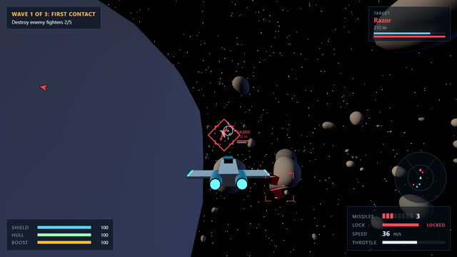
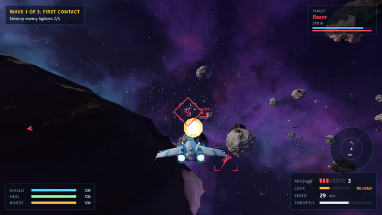
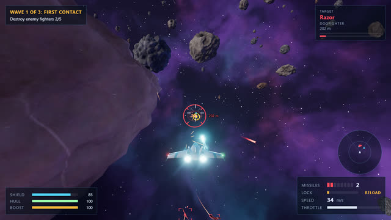
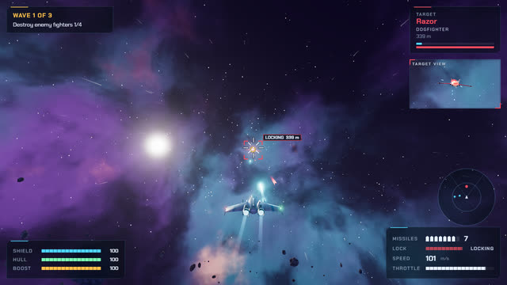
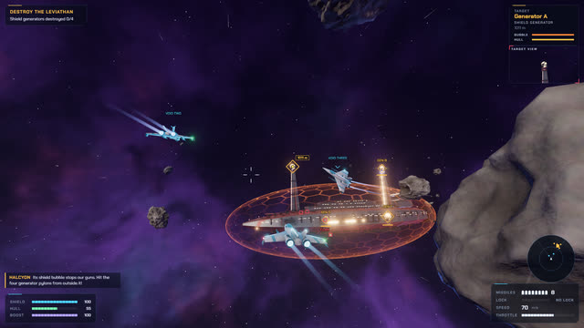

The mission
Every clip on this page comes from one recorded run of the finished game, captured frame by frame at 60 fps while a test script flew it with real mouse and keyboard input. The time beside each clip is how far into that run it happens.
-
Void One
Launch with your wingmen
You fly the KV-9 Kestrel with Void Two and Void Three on your wings. Anything marked in cyan is on your side.
-
Wave 1
Hold it centred, then fire
The first Razors arrive. Keep one near the middle of the screen and the missile lock builds by itself. When the tone goes solid and the tag turns green, press F or the right button.
-
Between waves
Rocks break, and so do you
Asteroids split into smaller rocks when you shoot them. Flying into one costs shields and hull, though the ship steers around the worst of it.
-
Wave 2
Razors come to you
Razor dogfighters chase you, fire where you are going and break off after each pass. Put the white cross on the yellow lead dot and hold the trigger.
-
Wave 2
Bombers in pairs
Maul bombers attack from two sides at once with long strafing runs of heavy plasma. A double bar over the red bracket marks one.
-
After wave 3
The Leviathan jumps in
A Hegemony carrier arrives behind a shield your guns cannot cross. Its flak turrets reach more than a kilometre.
-
Objective
Four generators, outside the bubble
The shield generators sit on pylons beyond the shield. If a tag says the shield is in the way, swing out until the shot is clear.
-
Finale
The chain reaction
With the last generator gone, the reactor tears the carrier apart in three pieces. Then the mission report: time, kills, accuracy and your rank.
Watch a full run
The whole mission, uncut, from the title screen to the victory report. The test pilot flies with invulnerability on, so it always makes it home: you will not. Pick a moment on the flight recorder to jump to it.
Controls
Point where you want to go. The ship turns toward the white ring; the white cross shows where your guns point. Put the cross on the yellow dot to hit a moving target.
Keyboard
- W / S
- Throttle up and down
- A / D
- Roll left and right
- Shift or Space
- Boost, while the boost meter lasts
- F
- Fire a missile once the green LOCK tag shows
- Tab
- Next target
- Esc or P
- Pause, settings and the flight guide
Mouse
- Move
- Steer. The mouse is captured once you click into the game
- Left button
- Lasers, hold to keep firing
- Right button
- Missile, same as F
Reading the screen
- You and your two wingmen
- Enemies
- Objectives, like the carrier's generators
- Danger to you: warnings, damage, incoming fire
- Your missile lock
- The lead dot: where to shoot
Shields recharge a few seconds after you stop taking hits. Hull damage does not. If you die, Retry starts you again at the wave you were on.
How it was made
VOID WING was built by Claude (Opus 5.5) from a single prompt, as the first of a five-game test. Nothing in it was downloaded: every model is a Blender Python script, every texture is baked or generated in a shader, and every sound, including the music, is synthesized in the browser.
-

1 Greybox
The whole loop in primitive shapes: fly, shoot, win and lose.
4 critic rounds
-

2 Assets
Ships, carrier, asteroids and missiles modelled by script in Blender and exported to glTF.
2 critic rounds
-

3 Feel
Camera, particles, trails, screen shake, hit feedback, sound and music.
6 critic rounds
-

4 Interface
Title, HUD, pause, failure and victory screens in one designed look.
11 critic rounds
-

5 Polish
A steady 60 fps, a rebuilt carrier, clearer targets at range, no console errors.
9 critic rounds
The critic loop
After every milestone a script played the game headless and saved screenshots from the player's camera. A separate reviewer that saw only those screenshots and a one-paragraph pitch, never the code, listed the five worst problems a player would notice. They were fixed and the loop ran again, 32 rounds in all, until the worst remaining problem was minor.
- Stack
- Vite, TypeScript and Three.js on WebGL2, with an HDR bloom and tone-mapping chain
- Models
- One Blender Python script per asset family, rebuilt with
npm run assets - Audio
- Web Audio synthesis: effects and a music sequencer, no sound files
- Performance
- 60 fps at 1080p on a desktop GPU; Auto graphics steps down on slower machines